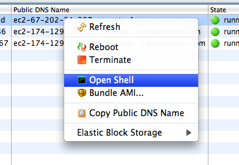

Once you have an EC2 instance running, you'll probably want to open a remote shell to it sooner or later. From the EC2 Instances view, just right-click the running instance you want to connect to, and select "Open shell" from the context menu.

In order to open a remote shell, you'll need the private key from the key pair that launched the instance you selected. You can quickly tell if you have the private key for an instances key pair by the icon displayed in the key pair column of the EC2 Instances view.
You'll also need an SSH client before you can open a remote shell to an EC2 instance. If you're running on Linux or Mac, you should have everything you need already set up. If you're on Windows, you'll need to make sure you have the PuTTY and PuTTYgen programs installed. If you don't, you can download them for free. The first time you use a key pair in PuTTY, the AWS Toolkit will also launch PuTTYgen so that you can convert the key pair to the format PuTTY understands. After you've done that once for your key pair, you won't have to do it again.
If you're having problems getting your SSH client to open correctly, you can check out the External Tools preference page for the AWS Toolkit. Here you can fine tune how your SSH client is invoked and specify any additional options.